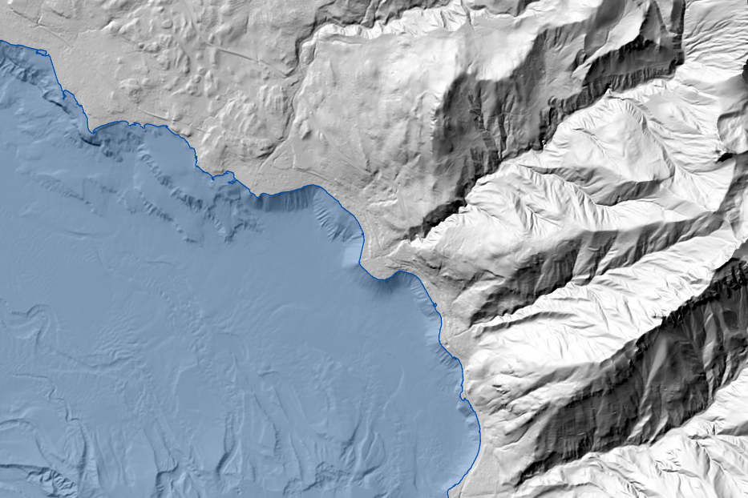
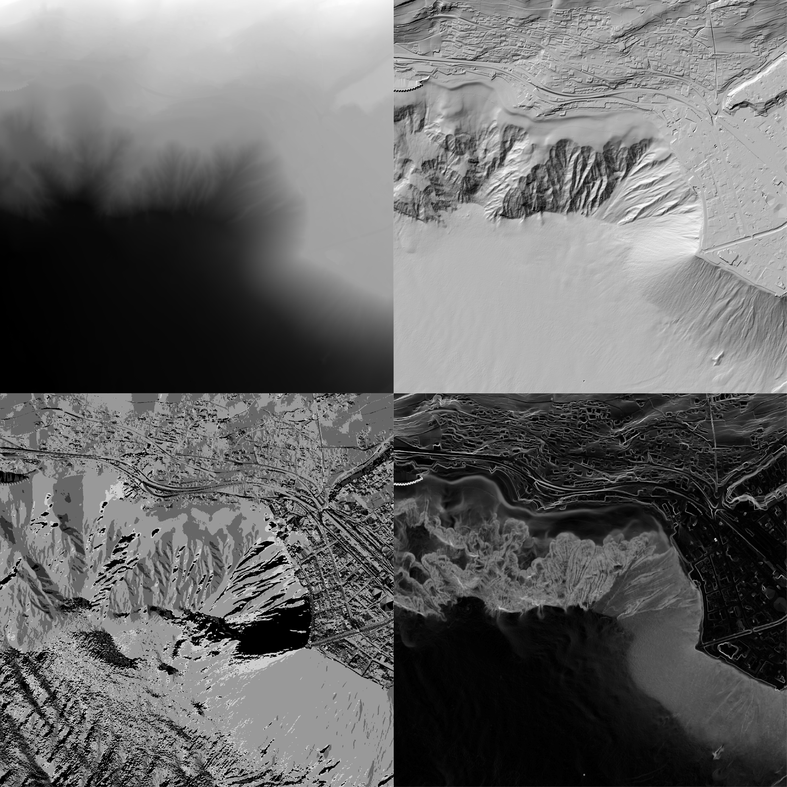

MNT complet
#FME
#Python
#LiDAR


Contexte
Pour chaque lac représenté sur le canton de Vaud, un mandat d'acquisition de données a été réalisé. Leur topologie étant très variable (taille, profondeur), les techniques d'acquisition utilisées sont multiples, tout comme la précision des données récoltées. Les données altimétriques raster terrestres et bathymétriques sont ainsi stockées séparément, notamment en raison de leur résolution variable.
Objectifs
Ce produit vise à simplifier l'expérience utilisateur en lui permettant de commander des données altimétriques terrestres et bathymétriques depuis un seul périmètre de commande (soit une seule commande Viageo). L'objectif est d'offrir une donnée raster continue et cohérente sur les zones de limites lacustres tout en simplifiant le processus de commande.
La mise en place d'une méthodologie semi-automatisée permettant la mise à jour du produit lors de l'évolution des données sources est donc nécessaire.
Rôle
Mon rôle au cœur de ce projet était de définir et développer une méthodologie fonctionnelle applicable à l'échelle du canton, dans le but d'obtenir une donnée raster altimétrique homogène sur l'ensemble du territoire vaudois.